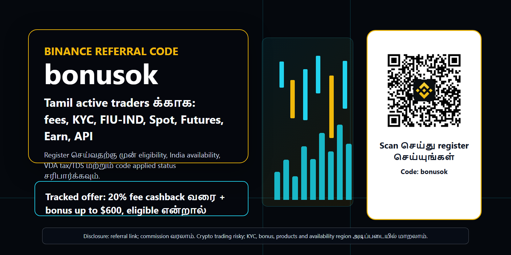
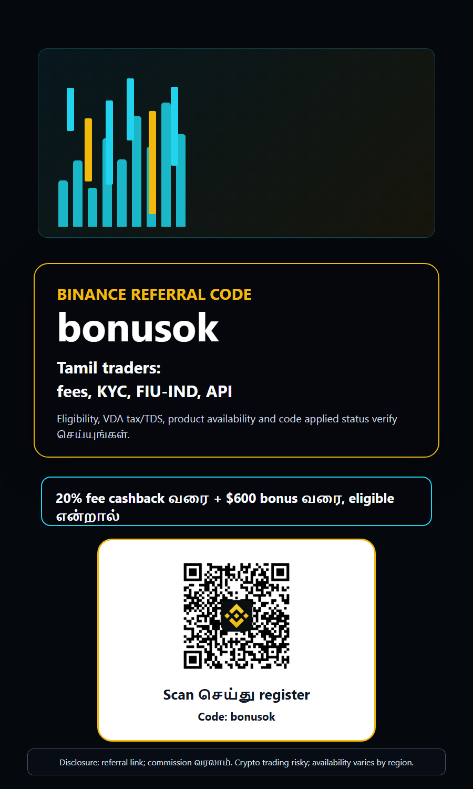
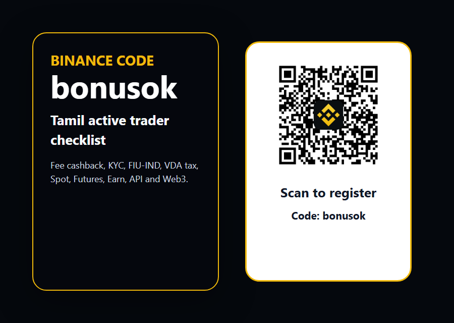

Disclosure: இந்த page referral link-ஐ கொண்டுள்ளது. நீங்கள் register அல்லது trade செய்தால் எங்களுக்கு commission கிடைக்கலாம். Crypto trading volatile; availability, KYC, bonus and products உங்கள் region மற்றும் eligibility அடிப்படையில் மாறலாம்.
Binance referral code bonusok Tamil guide: India active traders க்கான fee cashback, KYC, FIU-IND, API வழிகாட்டி
Tamil crypto traders க்கான Binance referral code bonusok guide: fee cashback, KYC, FIU-IND registration, India VDA tax/TDS, Spot, Futures, Earn, API, Web3, bots and latest Binance updates before registering. இது financial advice அல்ல; register செய்வதற்கு முன் official Binance terms, India tax rules and account availability-ஐ சரிபார்க்கவும்.


Real local QR code inserted after visual rendering; QR target is Binance registration with ref=bonusok.
இந்த Tamil guide ஏன் வேறு மாதிரி எழுதப்பட்டது
Binance referral code Tamil, Binance invite code, Binance bonus code, Binance referal code, bonusok என்ற தேடல்கள் ஒரு சின்ன coupon பதிலை மட்டும் கேட்பதில்லை. இந்தியா மற்றும் உலகம் முழுவதும் இருக்கும் Tamil crypto traders பொதுவாக மூன்று விஷயங்களை ஒன்றாக சரிபார்க்க விரும்புகிறார்கள்: code சரியாக apply ஆகிறதா, trading fees குறையுமா, account long term ஆக பாதுகாப்பாக இயங்குமா. அதனால் இந்த page ஒரு thin bonus post அல்ல; active trader register செய்யும் முன் படிக்க வேண்டிய practical checklist ஆக அமைக்கப்பட்டுள்ளது.
Tamil audience crypto மொழியை mixed style-ல் பயன்படுத்துகிறது. ஒருவர் தமிழ் வாக்கியத்துடன் Spot, Futures, Earn, API, KYC, fee cashback, TDS போன்ற English trading terms-ஐ சேர்த்து தேடுவார். அதனால் இந்த material இயல்பான Tamil-English trading language-ல் எழுதப்பட்டுள்ளது. நோக்கம் அதிக clicks வாங்குவது மட்டும் அல்ல; KYC முடித்து, deposit செய்து, real trading volume உருவாக்கக்கூடிய serious users-ஐ ஈர்ப்பது.
Quick answer: bonusok code எப்படி பயன்படுத்துவது
புதிய Binance account திறக்கும்போது referral link-ல் ref=bonusok இருக்கிறதா அல்லது இந்த page-ல் உள்ள QR scan செய்தால் registration page bonusok code-ஐ கொண்டே திறக்கிறதா என்பதை முதலில் பாருங்கள். Account already create செய்த பிறகு referral code சேர்ப்பது பல நேரங்களில் சாத்தியமில்லை. அதனால் email, phone, password, KYC, first deposit, first trade போன்ற எந்த முக்கிய step-க்கும் முன் code applied status-ஐ verify செய்வது நல்லது.
Offer wording எப்போதும் eligibility அடிப்படையில் தான் பார்க்க வேண்டும். bonusok வழியாக eligible users-க்கு 20% வரை fee cashback மற்றும் terms satisfy செய்தால் $600 வரை bonus வாய்ப்பு இருக்கலாம். இது guaranteed profit அல்ல, guaranteed cash அல்ல, எல்லா country அல்லது எல்லா product-க்கும் ஒரே மாதிரி கிடைக்கும் என்று அர்த்தமில்லை. Binance reward center, campaign terms, KYC level, region and product availability அனைத்தையும் register செய்த பிறகு மீண்டும் சரிபார்க்க வேண்டும்.
India context: FIU-IND, KYC மற்றும் clean onboarding
India-facing crypto material-ல் compliance angle மறக்க முடியாது. Binance தனது India regulatory update-ல் Financial Intelligence Unit India, அதாவது FIU-IND, reporting entity registration பற்றி கூறியது. இந்த registration Indian users-க்கு Binance website மற்றும் app access பற்றிய trust signal ஆக பயன்படும். ஆனால் அது profit guarantee அல்ல; அது எல்லா products எப்போதும் எல்லா users-க்கும் கிடைக்கும் என்ற உறுதி அல்ல. Account உள்ளே actual availability தான் final.
Tamil trader-களுக்கு முக்கியமான rule: VPN வைத்து location bypass செய்ய வேண்டாம், false KYC செய்ய வேண்டாம், borrowed bank account அல்லது third-party payment trick பயன்படுத்த வேண்டாம். Clean KYC, own payment method, source-of-funds clarity, transaction records ஆகியவை long-term account safety-க்கு அவசியம். Referral conversion விட account health முக்கியம்; blocked account அல்லது unresolved withdrawal issue வந்தால் சிறிய bonus பயனில்லை.
VDA tax மற்றும் TDS: active trader முன்கூட்டியே தெரிந்திருக்க வேண்டியது
India Income Tax Department Virtual Digital Asset guidance VDA transfer income, 30% tax framework மற்றும் Section 194S கீழ் 1% TDS போன்ற விஷயங்களை விளக்குகிறது. இந்த page tax advice அல்ல; qualified tax professional-ஐ consult செய்வது நல்லது. ஆனால் active crypto trader fee cashback மட்டும் கணக்கிடுவது போதாது. Tax, TDS cash flow, trade records, cost basis, INR conversion and ITR reporting ஆகியவை trading result-ஐ நேரடியாக பாதிக்கலாம்.
ஒருவர் அதிக frequency-யில் trade செய்தால் exchange fee மற்றும் spread மட்டும் அல்லாமல் tax reporting workload-மும் அதிகரிக்கும். Binance account தொடங்கும் முன் trade history export எங்கு கிடைக்கும், P2P records எப்படி சேமிக்க வேண்டும், bank entries எப்படி reconcile செய்ய வேண்டும், accountant-க்கு எந்த reports தர வேண்டும் என்பதையும் plan செய்ய வேண்டும். Serious trader போல ஆரம்பித்தால் பின்னர் confusion குறையும்.
Active traders-ஐ ஈர்க்கும் முக்கிய காரணம்: fee cashback
Long-term holder-க்கு referral bonus ஒரு extra benefit ஆக இருக்கலாம். ஆனால் active trader-க்கு trading fee என்பது PnL-ல் real line item. Scalping, swing trading, DCA rebalance, grid execution, high volume spot rotation, API strategy போன்றவற்றில் maker/taker fee difference monthly result-ஐ மாற்றும். bonusok code மூலம் fee cashback eligibility கிடைத்தால் அது ஒரு measurable cost-control advantage ஆக மாறலாம்.
Binance broad liquidity, many pairs, professional trading tools, API access, Earn products, Wallet ecosystem போன்ற காரணங்களால் active users-க்கு attractive ஆக இருக்கும். ஆனால் smart trader ஒவ்வொரு pair-க்கும் order book depth, spread, volume, minimum order size, tick size, funding rate and withdrawal fee எல்லாம் தனியாக பார்க்க வேண்டும். Referral code நல்ல starting point; due diligence தான் trader quality-ஐ காட்டும்.
Latest Binance hooks: Web3 API, Prediction Markets API, புதிய pairs மற்றும் bots
சமீபத்திய Binance announcements-ல் Binance Wallet Web3 API developer, institution மற்றும் advanced on-chain users-க்கு relevant hook ஆக உள்ளது. Prediction Markets API launch மற்றும் service upgrade notices API-driven users-க்கு ecosystem signal. Tamil tech audience-ல் software engineers, data analysts, automation traders, Web3 wallet users அதிகம் இருக்க முடியும்; அவர்களிடம் Binance-ஐ சாதாரண mobile app அல்லாமல் data, execution, wallet and Web3 stack ஆக position செய்யலாம்.
New trading pairs and Trading Bots services பற்றிய announcements active traders-க்கு மற்றொரு angle. புதிய pair volatility வாய்ப்பு தரலாம்; bots structured execution தரலாம். அதே நேரத்தில் removal notices, monitoring tags, tick-size updates, margin pair delistings போன்ற operational risks-ஐ ignore செய்யக்கூடாது. அதனால் இந்த guide latest features மட்டும் சொல்லவில்லை; announcement center-ஐ regular ஆக பார்க்க வேண்டும் என்று வலியுறுத்துகிறது.
Register செய்வதற்கு முன் checklist
Step one: official Binance domain மற்றும் referral URL மட்டும் பயன்படுத்துங்கள். Step two: ref=bonusok அல்லது QR target correct ஆக இருப்பதை பார்க்குங்கள். Step three: strong password, 2FA, anti-phishing code, device management and withdrawal whitelist அமைக்கவும். Step four: KYC documents தயாராக வைத்துக்கொள்ளவும். Step five: reward center அல்லது referral area-ல் code applied status தெரிகிறதா என்று பார்க்கவும்.
Step six: deposit route முடிவு செய்வதற்கு முன் supported payment methods, P2P rules, network choice, withdrawal fee and minimum deposit amount பார்க்கவும். Step seven: முதல் trade small size-ல் செய்யவும். Step eight: tax/export tools எப்படி வேலை செய்கின்றன என்று தெரிந்துகொள்ளவும். இந்த order slow ஆக தோன்றலாம், ஆனால் professional onboarding இப்படித்தான் இருக்கும்.
30 நாள் onboarding plan
Day 1 to 3: account security, KYC, code verification, app settings, fiat/crypto deposit options and risk limits. இந்த stage-ல் பெரிய deposit தேவையில்லை. Interface, wallet page, fee schedule, support center and reward center அனைத்தையும் புரிந்துகொள்ளுங்கள். bonusok visible இல்லையென்றால் first deposit செய்யும் முன் support அல்லது settings மூலம் clarify செய்யுங்கள்.
Day 4 to 14: Spot market-ல் small limit orders, market orders, stop-limit, watchlist, alerts and P2P process test செய்யலாம். API user என்றால் read-only key வைத்து market data pull செய்யலாம். Day 15 to 30: higher size, Futures, Margin, bots, Earn or Web3 products பற்றி யோசிக்கலாம். ஒவ்வொரு product-க்கும் தனி risk profile, eligibility and tax implications இருக்கலாம்.
Spot, Futures, Margin: ஒரே account, வேறு வேறு risks
Spot trading-ல் asset வாங்கி விற்கிறீர்கள்; loss price movement மூலம் வருகிறது. Futures-ல் leverage, funding rate, liquidation price, maintenance margin, rapid volatility risk அனைத்தும் சேர்கின்றன. Margin-ல் borrowed funds risk உள்ளது. Referral page Futures-ஐ easy-money shortcut போல காட்டினால் அது மோசமான marketing. Derivatives வேண்டுமானால் position sizing, stop loss, liquidation math மற்றும் emotional discipline முதலில் இருக்க வேண்டும்.
India user-க்கு product availability region, KYC, Binance policy மற்றும் local rules அடிப்படையில் மாறலாம். ஒரு நண்பரின் account-ல் feature தெரிகிறது என்பதால் உங்களுக்கும் கிடைக்கும் என்று assume செய்ய வேண்டாம். Account உள்ளே available products, terms of use and risk notices பார்க்காமல் எந்த leverage trade-யும் தொடங்க வேண்டாம்.
API automation: Tamil developer traders க்கான angle
Tamil-speaking tech audience-ல் Python, JavaScript, TradingView webhook, spreadsheet model, custom bot போன்றவற்றை பயன்படுத்தும் traders இருக்கிறார்கள். Binance API அவர்களுக்கு useful ஆகலாம். ஆனால் API key security மிக முக்கியம்: withdrawal permission off, IP restriction, separate key, error logging, rate-limit handling, alerting, dry-run mode போன்ற discipline இல்லாமல் bot run செய்வது dangerous.
Spot API updates, tick-size changes, exchangeInfo endpoint, minimum notional, step size and precision values அனைத்தும் automation strategy-க்கு critical. New pair launch ஆகும்போது liquidity, slippage, order size and volatility முதலில் பார்க்க வேண்டும். Fee cashback ஒரு advantage ஆக இருந்தாலும் bot bug ஒரு நாளில் அந்த saving-ஐ விட பெரிய loss தர முடியும்.
Earn, stablecoins மற்றும் idle capital management
Active trader எப்போதும் market-ல் position வைத்திருக்க வேண்டிய அவசியமில்லை. Signal இல்லாத days, abnormal volatility, event risk or tax planning periods-ல் idle capital எப்படி manage செய்வது என்ற கேள்வி வரும். Binance Earn, flexible products, stablecoin holdings போன்றவை சில users-க்கு பயன்படலாம். ஆனால் APY guarantee அல்ல; redemption terms, asset risk, platform risk and eligibility பார்க்க வேண்டும்.
இந்த guide Earn products-ஐ passive income promise ஆக காட்டவில்லை. அது portfolio workflow-ல் ஒரு optional tool மட்டுமே. Indian users tax treatment, TDS, stablecoin issuer risk, INR conversion and record keeping பார்க்க வேண்டும். Bonus அல்லது cashback இருந்தாலும் capital preservation முக்கியம்.
P2P மற்றும் INR routes: speed விட safety முக்கியம்
India-வில் P2P routes popular ஆக இருக்கலாம். ஆனால் merchant verification, completion rate, payment method, order limit, price spread, appeal process and platform rules அனைத்தையும் கவனிக்க வேண்டும். Off-platform settlement, fake screenshot, third-party bank account, urgency pressure, suspicious narration ஆகியவற்றை avoid செய்ய வேண்டும். Clean payment record tax and compliance documentation-க்கும் உதவும்.
Small test transaction, own bank account, clear records, no external chat promises, no escrow bypass என்ற basic rules-ஐ follow செய்யுங்கள். Referral code மூலம் register செய்த user long-term active trader ஆக மாற வேண்டுமென்றால் first deposit experience smooth and compliant ஆக இருக்க வேண்டும்.
Bonus hunters அல்ல, serious active traders-ஐ எப்படி filter செய்கிறது
இந்த page headline-ல் bonusok மற்றும் $600 வரை bonus mention இருந்தாலும் main message அது அல்ல. Main message: register before deposit, code verify செய், KYC clean ஆக முடி, fees மற்றும் tax புரிந்து கொள், products availability சரி பார், பின்னர் disciplined trading செய். இந்த framing bonus-only users-ஐ ஒரு அளவுக்கு filter செய்யும்; serious traders-க்கு confidence தரும்.
SEO keywords deliberate ஆக mix செய்யப்பட்டுள்ளது: Binance referral code Tamil, Binance referal code, Binance invite code, Binance bonus code, bonusok, fee cashback, FIU-IND, VDA tax, TDS, Spot, Futures, Earn, API, Web3. Tamil users search engine-ல் இவ்வாறு mixed terms பயன்படுத்துவதால் content local intent-ஐ பிடிக்கிறது.
Verification: code applied ஆனதா எப்படி பார்க்கலாம்
Registration page திறக்கும் போது URL-ல் ref=bonusok இருக்கிறதா என்பதை பார்க்கலாம். Signup முடிந்த பிறகு reward center, referral page அல்லது account benefits பகுதியில் invite code அல்லது campaign status தெரிகிறதா என verify செய்யலாம். தெரியவில்லை என்றால் பெரிய deposit செய்யும் முன் support center documentation-ஐ பார்க்கவும். Screenshot எடுத்து வைத்துக்கொள்வது useful.
Code applied ஆகவில்லை என்ற சந்தேகம் இருந்தால் புதிய account உருவாக்குவதற்கு முன் terms படிக்க வேண்டும்; duplicate account, self-referral, abuse pattern அல்லது fake identity Binance rules-ஐ violate செய்யலாம். Long-term referral value clean users-ல்தான் வருகிறது.
Tamil traders க்கான practical risk budget
Account தொடங்கும் முன் ஒரு simple risk budget எழுதுங்கள்: total capital எவ்வளவு, first month maximum loss எவ்வளவு, single trade risk எவ்வளவு, leverage use செய்வீர்களா, எந்த pairs மட்டும் trade செய்வீர்கள், tax records எப்படி வைத்துக்கொள்வீர்கள். இந்த questions boring ஆனாலும் serious trader-க்கு அவசியம். Referral fee saving இருந்தாலும் overtrading செய்தால் benefit மறைந்து விடும்.
New pair launch அல்லது trending coin பார்த்து FOMO trade செய்ய வேண்டாம். Binance announcement center, project risk, liquidity, volatility, funding rate, delisting risk and monitoring tag எல்லாம் பார்க்க வேண்டும். Active trading profitable ஆகும் என்ற guarantee இல்லை; loss accept செய்யும் plan இல்லாமல் account திறப்பது நல்ல முடிவு அல்ல.
Portfolio workflow: ஒரு exchange மட்டும் போதுமா
பல active traders Binance-ஐ main execution venue ஆக பயன்படுத்தினாலும், முழு capital-ஐ ஒரே platform-ல் வைப்பது அவசியமில்லை. Cold wallet, second exchange, bank liquidity, tax reserve, emergency cash ஆகியவற்றை தனியாக plan செய்யலாம். Referral code மூலம் account தொடங்குவது convenience; custody and concentration risk என்பது வேறு decision. Tamil trader capital allocation எழுதிக்கொண்டால் impulsive deposits குறையும்.
ஒரு practical structure: trading capital, long-term holding capital, tax reserve, experiment budget, emergency withdrawal buffer. Trading capital-ல் மட்டும் Futures அல்லது API strategy test செய்யுங்கள். Long-term holdings-க்கு hardware wallet அல்லது self-custody பற்றி தனியாக கற்றுக்கொள்ளுங்கள். Binance Wallet Web3 tools useful ஆக இருந்தாலும் private key, seed phrase, smart contract and phishing risks பற்றி தெரியாமல் Web3 action செய்ய வேண்டாம்.
Source freshness: ஏன் latest announcements பார்க்க வேண்டும்
Exchange products மிக வேகமாக மாறுகின்றன. இன்று listed pair நாளை monitoring tag பெறலாம்; bot service இன்று open ஆகி பின்னர் disabled ஆகலாம்; API endpoint behavior update ஆகலாம்; campaign bonus period முடிந்து போகலாம். அதனால் இந்த page ஒரு dated guide. 2026-07-05 அன்று Binance announcements, India FIU context and Income Tax VDA/TDS pages பார்த்து எழுதப்பட்டது. Register செய்வதற்கு முன் official source மீண்டும் பார்க்க வேண்டும்.
இந்த source-first approach தான் referral material-ஐ professional ஆக்குகிறது. நாங்கள் ஒரு code மட்டும் push செய்யவில்லை; user சரியான account, சரியான expectations, சரியான risk controls உடன் வர வேண்டும். அப்படிப்பட்ட users deposit, trade, stay active and generate retained volume செய்யும் chance அதிகம். அதுதான் இந்த Tamil campaign-ன் real acquisition thesis.
FAQ: Tamil users கேட்கும் பொதுவான கேள்விகள்
bonusok code India users-க்கு வேலை செய்யுமா? Final answer account region, KYC, campaign terms and Binance availability-ல் உள்ளது. Code registration link-ல் சேர முடியும்; reward eligibility தனியாக verify செய்ய வேண்டும். Bonus guaranteed அல்ல. Fee cashback upto 20% என்று மட்டும் புரிந்துகொள்ள வேண்டும். $600 வரை bonus என்றால் terms meet செய்தால் மட்டும்.
Futures India users-க்கு கிடைக்குமா? அது உங்கள் account eligibility, product availability and current Binance rules அடிப்படையில் மாறும். Tax எப்படி? இந்த page tax advice அல்ல; India Income Tax Department VDA/TDS pages மற்றும் professional advice பார்க்க வேண்டும். QR safe ஆ? இந்த material-ல் பயன்படுத்திய QR local source-இல் இருந்து insert செய்யப்பட்டது; target accounts.binance.com/register?ref=bonusok.
Final call: bonusok பயன்படுத்த வேண்டுமா
நீங்கள் Binance account புதியதாக திறக்கப் போகிறீர்கள், official availability உங்களுக்கு உள்ளது, KYC clean ஆக செய்ய தயாராக இருக்கிறீர்கள், trading fee, tax, risk and product eligibility புரிந்து கொள்ள தயாராக இருக்கிறீர்கள் என்றால் bonusok referral code பயன்படுத்துவது sensible starting point. குறிப்பாக active trader என்றால் fee cashback angle real value தரலாம்.
ஆனால் ஒரு referral code உங்கள் trading plan-ஐ மாற்றக்கூடாது. முதலில் safety, compliance, risk budget, small test trades, records and continuous learning. இந்த order சரியாக இருந்தால் Binance referral code bonusok ஒரு useful entry point ஆக இருக்கும்; இல்லையெனில் எந்த bonus-ம் poor trading decisions-ஐ சரி செய்யாது.
FAQ
Binance referral code Tamil users க்கு என்ன?
இந்த guide-ல் பயன்படுத்தும் code bonusok. Registration link: https://accounts.binance.com/register?ref=bonusok.
bonus guaranteed ஆக கிடைக்குமா?
இல்லை. Bonus மற்றும் cashback eligibility Binance terms, KYC, region, campaign rules and account status அடிப்படையில் இருக்கும்.
India users tax பற்றி என்ன செய்ய வேண்டும்?
Income Tax Department VDA/TDS guidance மற்றும் qualified tax professional advice பார்க்க வேண்டும். Trade records சேமிக்கவும்.
QR code எங்கு செல்கிறது?
QR target Binance registration URL: https://accounts.binance.com/register?ref=bonusok.

Sources checked
- Binance announcement center
- Binance Wallet Web3 API
- Binance Wallet Prediction Markets API
- Binance new trading pairs and trading bots
- Binance spot pair removal notice
- Binance India FIU-IND registration
- FIU-IND official website
- Income Tax Department VDA tax page
- Income Tax Department VDA TDS page
Risk warning: Crypto, derivatives, bots, Web3 products and market-linked rewards involve risk. Do not trade with money you cannot afford to lose. Do not bypass restrictions, do not use false KYC, and do not treat any bonus as guaranteed profit. Verify eligibility, availability and tax impact before using Binance or any exchange product.